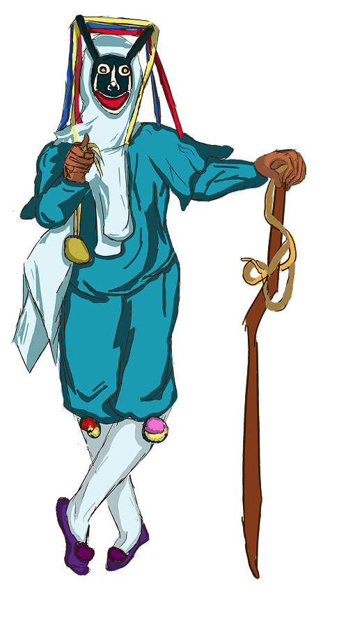
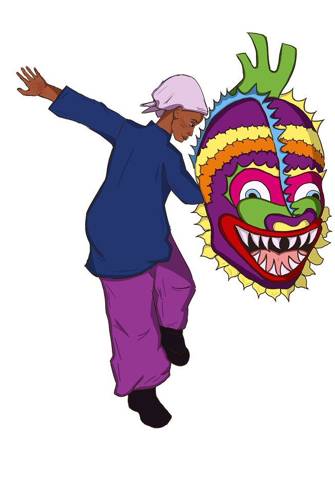
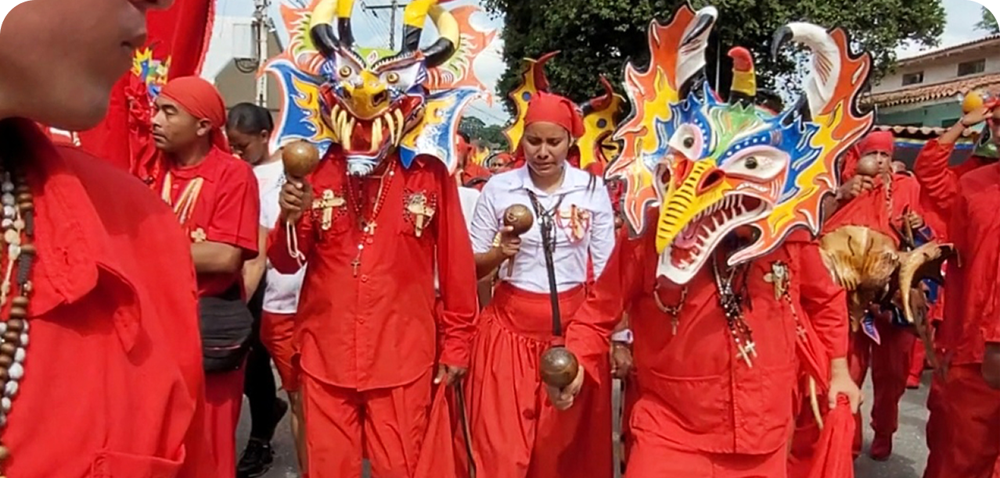
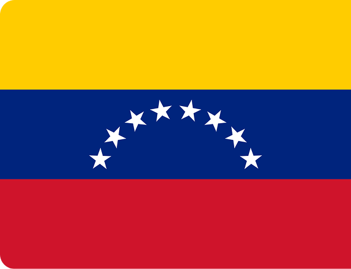
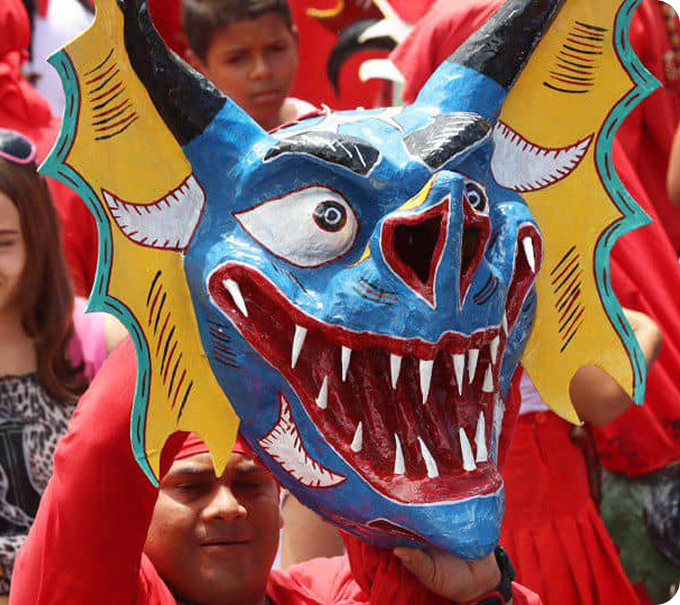

VENEZUELA
Diablos Danzantes
Chuao

A tradição dos Diablos Danzantes surgiu há cerca de 400 anos nas regiões centrais da costa da Venezuela, como resultado do sincretismo entre o catolicismo imposto durante a colonização espanhola e as práticas culturais de origem africana e indígena.
Os personagens associados a Chuao e Naiguatá fazem parte das cofradias dos Diablos Danzantes de Corpus Christi, uma tradição afro-venezuelana reconhecida como Patrimônio Cultural Imaterial da Humanidade pela UNESCO. Essa manifestação ritual representa o triunfo do bem sobre o mal e integra elementos africanos, indígenas e católicos.
Na tradição de Chuao, os Diablos Danzantes realizam procissões acompanhadas por tambores e músicas tradicionais, executando movimentos de penitência e devoção ao longo do percurso. O ritual culmina diante da igreja, onde ocorre a rendição simbólica dos diabos ao Santíssimo Sacramento. A celebração representa a luta entre o bem e o mal, reafirmando a vitória do sagrado e da fé sobre as forças malignas.
Em Naiguatá, os Diablos Danzantes participam de um ritual marcado por procissões, música de tambores e forte envolvimento da comunidade. Durante o Corpus Christi, os dançarinos percorrem as ruas da cidade e realizam apresentações diante da igreja e em visitas simbólicas às casas. A celebração se destaca pela ampla participação popular, reunindo pessoas de diferentes idades e, em algumas tradições, também mulheres como danzantes.
Naiguatá


A tradição nasceu há mais de 300 anos, na cidade de São Francisco de Yare. Os fiéis dançam em frente ao Santíssimo Sacramento, para cumprirem suas promessas, caso suas orações fossem atendidas. As danças e as fantasias carregam significado: as máscaras representam o mal, enquanto a dança simboliza a vitória do bem, se movendo ao ritmo dos tambores, e reverenciando a Eucaristia. As máscaras e fantasias são feitas manualmente pelos locais, com chifres, presas e desenhos únicos que marcam a cultura Venezuelana.

A Venezuela reúne influências indígenas, africanas e europeias que moldaram sua identidade cultural ao longo dos séculos. O espanhol é a língua oficial, coexistindo com diversos idiomas indígenas. Sua história recente inclui períodos de instabilidade política, crises econômicas e intensos debates sobre identidade nacional.
Os Diablos Danzantes de Yare representam uma das tradições mais emblemáticas do país. Com máscaras artesanais e danças ritualísticas, a celebração simboliza a vitória do bem sobre o mal. Ao mesmo tempo, preserva conhecimentos transmitidos entre gerações, demonstrando como a cultura popular se torna espaço de memória e continuidade ancestral.
